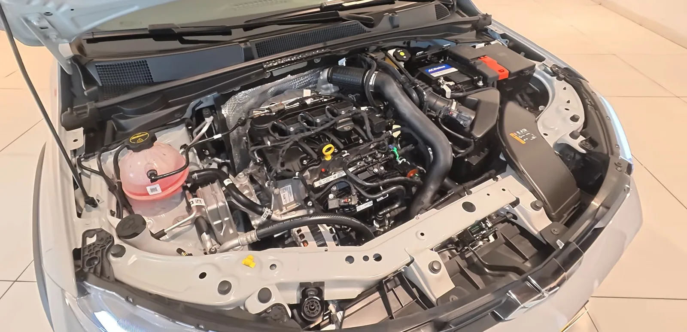
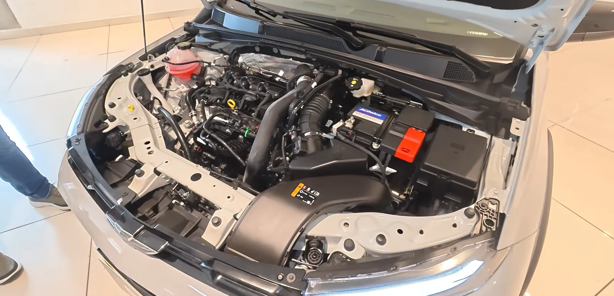
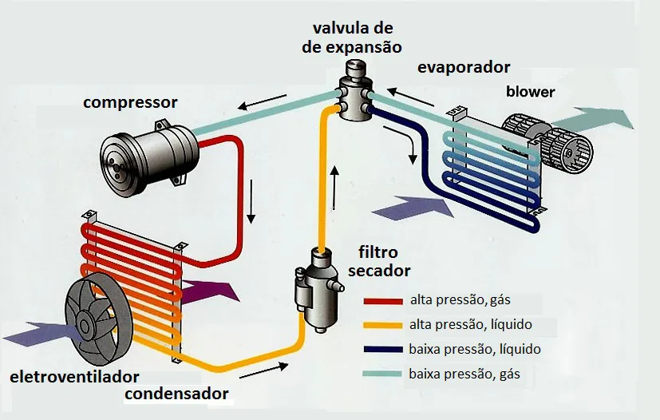

▲ 차량 에어컨 조작부. 냉방이 예전 같지 않다면 냉매보다 먼저 확인할 것들이 있다 ⓒ Wikimedia Commons (CC BY-SA 2.0)
"에어컨 가스는 매년 넣어줘야 한다"는 통념은 반은 맞고 반은 틀렸다. 정상적으로 밀봉된 시스템이라면 애초에 자주 보충할 필요가 없다는 것이 정비 업계의 설명이다.
1. "매년 충전"이라는 통념의 함정

▲ 자동차 엔진룸. 에어컨 냉매 배관은 원칙적으로 밀봉된 상태를 유지한다 ⓒ Wikimedia Commons (CC BY 4.0)
에어컨 냉매 시스템은 원래 밀폐 구조로 설계돼, 문제가 없다면 냉매가 자연히 줄어들 이유가 없다. 그런데도 "매년 충전이 필요하다"는 인식이 퍼진 이유는, 실제로 미세한 누유가 있는 차량이 적지 않고, 이런 차들의 경험담이 일반화됐기 때문으로 풀이된다. 만약 매년 냉매를 보충해야 하는 상황이라면, 이는 정상이 아니라 어딘가 새고 있다는 신호로 봐야 한다.
2. 3만 원부터 30만 원까지 — 가격 차이의 정체

▲ 엔진룸의 컴프레서와 배관. 에어컨 냉매 충전 비용은 냉매 종류에 따라 크게 갈린다 ⓒ Wikimedia Commons (CC BY 4.0)
| 냉매 종류 | 특징 | 비용 수준 |
|---|---|---|
| R-134a | 기존 냉매, 상대적으로 저렴 | 3만 원대~ |
| R-1234yf | 친환경(GWP 360배 낮음), 취급장비 고가 | R-134a 대비 2~5배 |
비용 편차가 큰 핵심 이유는 냉매 종류다. R-1234yf는 지구온난화지수(GWP)가 R-134a보다 360배 낮은 친환경 냉매이지만, 생산 공정이 복잡하고 이를 다루는 전용 장비 자체가 고가라 냉매 가격도 2~5배 비싸다. 최신 차량일수록 R-1234yf를 채택하는 경우가 많아, 같은 '에어컨 가스 충전'이라도 차종에 따라 청구 금액이 크게 달라질 수 있다.

▲ 에어컨 냉매 순환 구조. 압축기→응축기→건조필터→팽창밸브→증발기→블로어 순으로 냉매가 밀폐된 배관을 순환한다 ⓒ Wikimedia Commons (CC BY-SA 4.0)
3. "눈탱이 논란"의 실체
일부 소비자들 사이에서 불거진 고액 청구 논란은 대개 단순 보충이 아니라 전량 회수 후 재충전(플러싱 포함) 작업이 이뤄졌기 때문인 경우가 많다. 이 작업은 기존 냉매와 오일을 모두 빼내고 시스템을 세척한 뒤 새로 채우는 과정으로, 단순 보충보다 시간과 재료가 더 들어가 비용이 20~50% 추가된다. 견적을 받을 때는 '단순 보충'인지 '전량 교체'인지를 먼저 확인하는 것이 오해를 줄이는 방법이다.
4. 언제 정비소를 찾아야 하나

▲ 정비소 점검 장면. 냉방 성능 저하가 체감되면 누유 여부부터 확인받는 것이 순서다 ⓒ CarPrism
냉방 성능이 예전보다 확실히 약해졌거나, 에어컨을 켰을 때 이상한 소음이 나거나, 송풍구에서 나오는 바람의 온도가 들쭉날쭉하다면 점검을 받아볼 시점이다. 이런 증상 없이 정기적으로 냉매를 넣어야 한다고 안내받는다면, 다른 정비소에서 누유 여부를 재확인해보는 것도 방법이다.
5. 정리
체크포인트
- 정상적인 시스템이라면 에어컨 냉매는 자주 보충할 필요가 없다.
- 매년 충전이 필요하다면 누유를 의심해야 한다.
- 비용 차이는 대부분 냉매 종류(R-134a vs R-1234yf)에서 온다.
- 고액 견적을 받았다면 단순 보충인지 전량 교체인지 먼저 확인하자.